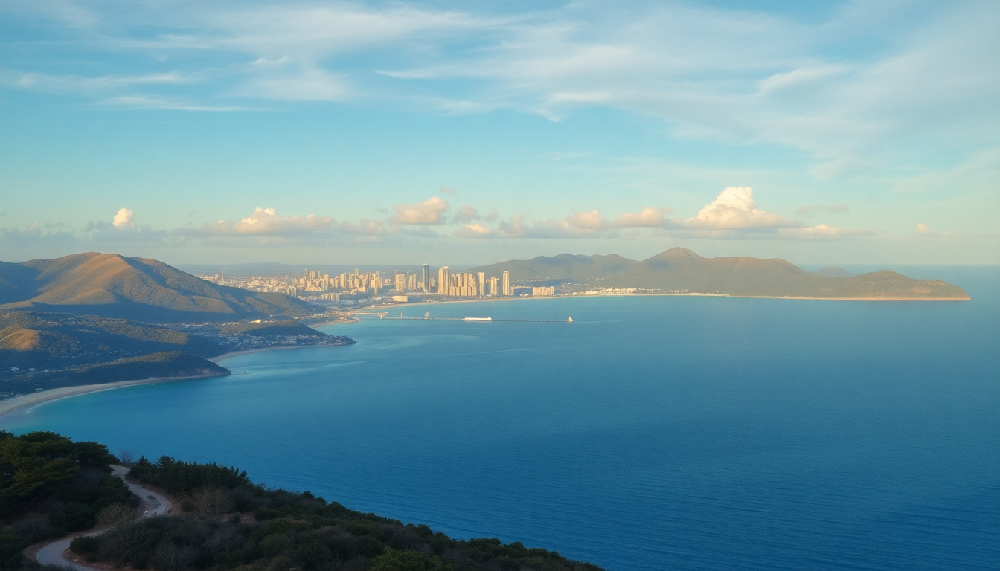

7-Day Australia Itinerary: Sydney, Cairns & Reef

I landed in Sydney on a Tuesday morning, jet-lagged but buzzing, with seven days to hit three big spots: Sydney, Cairns, and the Great Barrier Reef. Most guides make this sound like a sprint, and honestly, it is—but with the right moves, you can eat well, sleep decently, and actually see the reef without collapsing. Here’s exactly how I did it, with real names and honest opinions.
Is seven days enough for Sydney, Cairns, and the Great Barrier Reef?
Barely, but yes—if you treat the transit days as part of the trip, not wasted time. I flew Sydney to Cairns on day four (a two-hour domestic hop), which gave me three full days in each city. You won’t explore every alley, but you’ll hit the essentials: the Sydney Opera House, a Blue Mountains day trip, snorkeling the reef, and a dose of Daintree rainforest. The trick is booking morning flights and packing light—carry-on only saved me at least an hour per airport.
What should I do on my first day in Sydney?
Start at Circular Quay. I grabbed a coffee from The Grounds of the City (their flat white is solid) and walked straight to the Sydney Opera House. Skip the guided tour inside unless you’re obsessed with acoustics—the exterior is the real show. Then wander through The Rocks neighborhood for the weekend markets if you’re there Saturday or Sunday. For lunch, I hit Bills in Surry Hills for their ricotta hotcakes; it’s touristy but deservedly so. Afternoon: ferry from Circular Quay to Manly Beach. The 20-minute ride gives you postcard views of the harbour, and Manly’s surf is less crowded than Bondi. Dinner at The Newport in Manly—fish and chips on the deck, no reservations needed.
Where should I stay in Sydney?
I split my three nights between two spots. First two nights at The Old Clare Hotel in Chippendale—a converted pub with exposed brick and a rooftop pool. Rooms are small but stylish, and the location is a ten-minute walk to Central Station. Last night at The Sydney Harbour Marriott near Circular Quay. It’s pricier and corporate, but waking up to the Opera House view from the window is worth the splurge once. If you’re on a budget, The Pod Sydney in Darlinghurst offers clean capsule-style rooms for under $100 AUD a night, and it’s a short bus ride to the CBD.
Is the Blue Mountains worth a day trip?
Yes, but skip the tourist-trap Scenic World cable cars. I booked a small-group tour with Adventure Blue Mountains that picked me up at 7 AM from my hotel. We hiked the Prince Henry Cliff Walk past the Three Sisters lookout—less crowded than the main viewing platform, and you get the same photo. Lunch at The Conservation Hut in Wentworth Falls: the lamb burger was average, but the view over the valley is unbeatable. The tour dropped me back in Sydney by 5 PM. If you’re driving yourself, target Wentworth Falls and Gordon Falls for short, rewarding walks. Don’t bother with the Featherdale Wildlife Park on the way back—it’s a zoo, not a wildlife experience.
What’s the best way to see the Great Barrier Reef from Cairns?
Book a day trip to the outer reef, not the inner fringing ones. I went with Reef Magic Cruises out of Cairns Marina. The catamaran ride takes 90 minutes to their pontoon at Moore Reef. Snorkeling gear and a buffet lunch are included. The coral was vibrant in February (warm water, 28°C), but visibility drops in summer rain—check forecasts. If you’re prone to seasickness, take a Dramamine an hour before; the swell was noticeable. For a premium option, Passions of Paradise runs a smaller boat to Michaelmas Cay, a sand cay with better snorkeling and fewer people. Both operators provide wetsuits and stinger suits November to May.
Should I stay in Cairns or Port Douglas?
I stayed in Cairns for two nights at Crystalbrook Riley—a modern hotel with a lagoon pool and walkable access to the Esplanade. Night markets are tacky but fun for a wander. Port Douglas is quieter and closer to the reef (20 minutes less boat time), but it’s a 45-minute drive from Cairns Airport. If you want restaurants and nightlife, stay in Cairns. If you want a resort vibe, book Sea Temple Resort & Spa in Port Douglas. I took a taxi from Cairns to Port Douglas for a day to visit Hartley’s Crocodile Adventures—the croc feeding show is genuinely thrilling, and the café there does a decent kangaroo burger.
What should I eat in Cairns?
Don’t miss the night market food court on the Esplanade. I ate at Night Market Noodle Bar for $12 AUD laksa—spicy, coconut-heavy, and fast. For a proper dinner, Ochre Restaurant on the waterfront serves native Australian ingredients: crocodile spring rolls and emu fillet. The crocodile tastes like chicken with a chewier texture; the emu is lean and gamey. Skip the tourist-bus Dundee’s Restaurant on the waterfront—overpriced barramundi and a tired menu. For dessert, Gelato Messina in the city centre has a rotating list of weird flavours (miso caramel, honeycomb) that are actually good.
FAQ
Is it better to fly into Sydney or Cairns first? Fly into Sydney first. The time zone shift from the US or Europe is easier to handle in a big city with 24/7 food and transport. Cairns is more laid-back, and arriving jet-lagged into humidity and early closing hours (most shops shut by 6 PM) is frustrating. Sydney also has more flight connections to Cairns than vice versa.
Do I need a visa for Australia as a US or UK citizen? Yes. US and UK passport holders need an Electronic Travel Authority (ETA) —apply online through the Australian Department of Home Affairs. It costs about $20 AUD and is usually approved within hours. Print the confirmation; airline staff check it at check-in.
What’s the best time of year for this itinerary? April to June or September to November. Summer (December to February) is cyclone season in Cairns, and the reef can be murky. Winter (June to August) is dry and clear in Cairns but chilly in Sydney—think 10°C mornings. I went in February and got lucky with weather, but I wouldn’t risk it again.
Conclusion
- Fly into Sydney first, then Cairns—morning flights keep your days productive.
- Stay at The Old Clare Hotel in Sydney and Crystalbrook Riley in Cairns for location and value.
- Book a small-group Blue Mountains tour to avoid crowds; skip Scenic World.
- Snorkel the outer reef with Reef Magic Cruises or Passions of Paradise—not the inner reef.
- Eat at Ochre Restaurant in Cairns and Bills in Sydney; skip Dundee’s and any chain pub in The Rocks.